screenshots album
The idea
This publication started from a series of screenshots saved on my phone between January 2019 and April 2020.
What I did
I worked these images — mostly photographs, sometimes text and other graphic elements — purely as visual compositions, without necessarily tying their content to the way they are presented.
Type
For the same reason I chose a dingbat font, which I used in some places as text and in others as illustration.
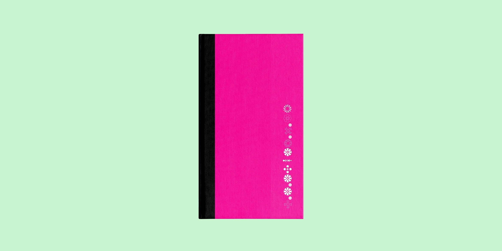
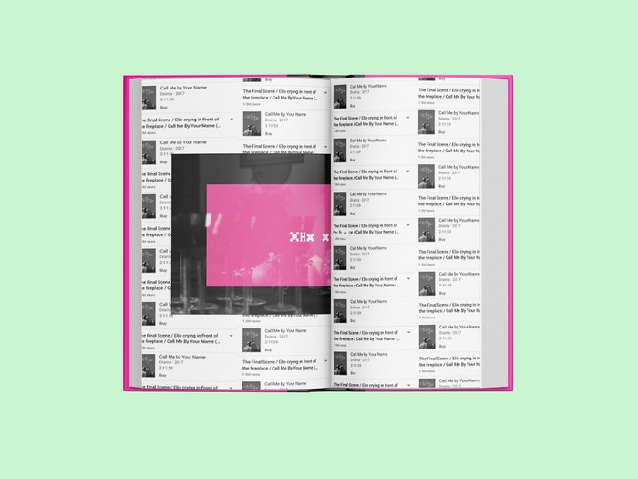
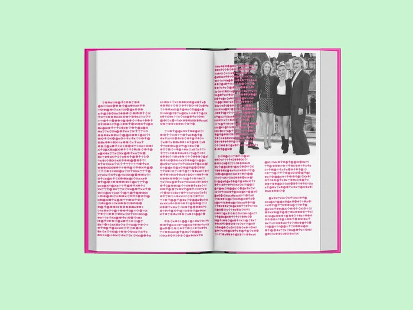

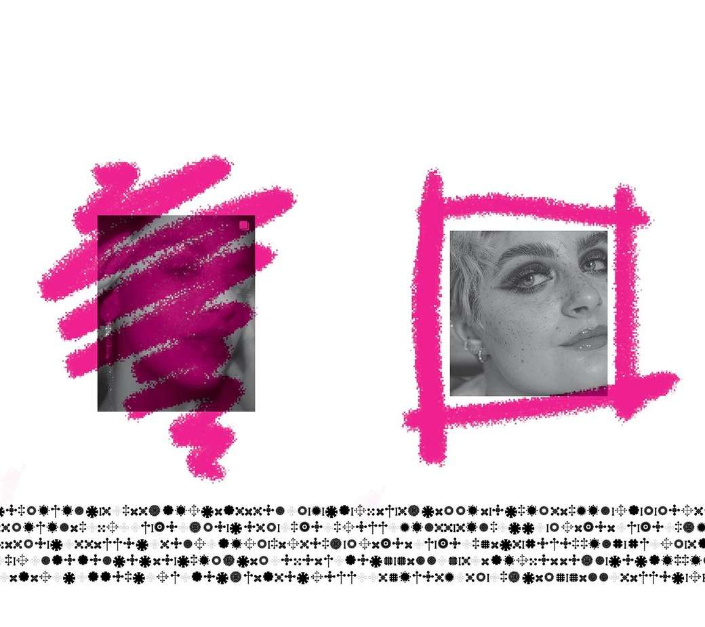
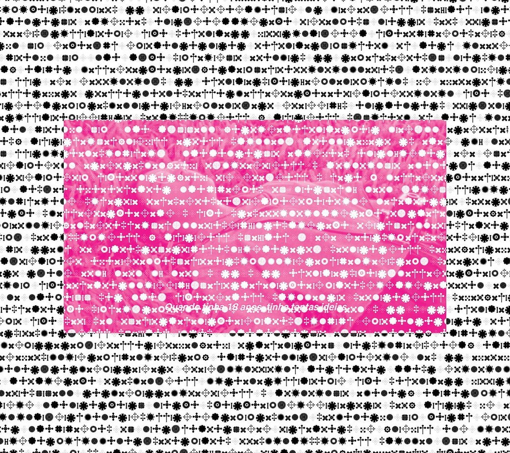
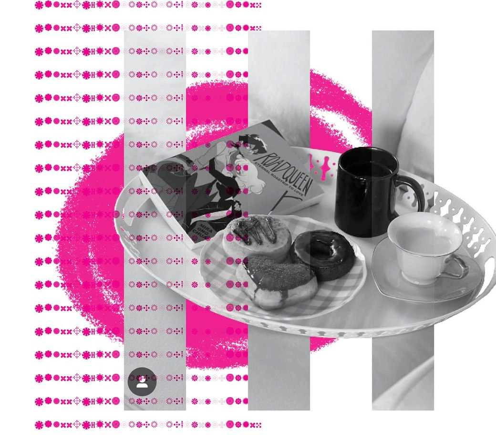
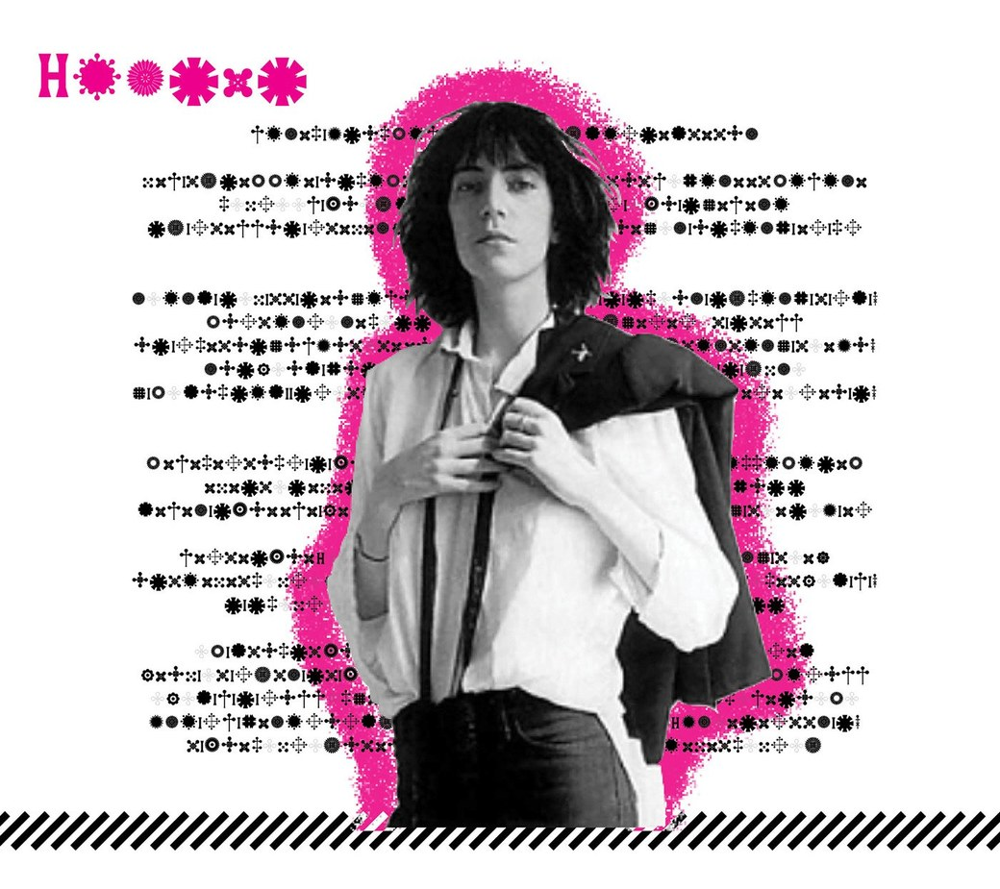
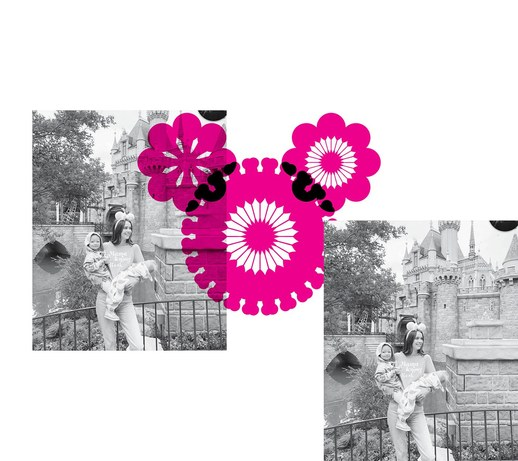
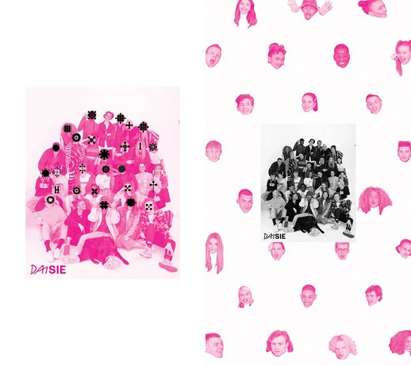
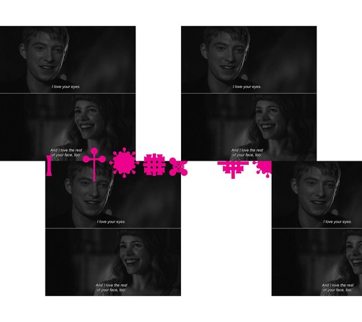
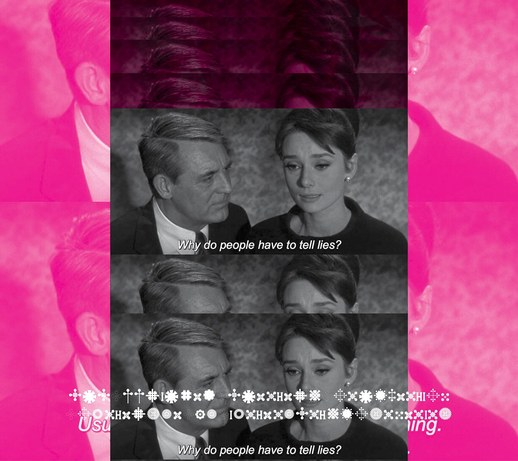
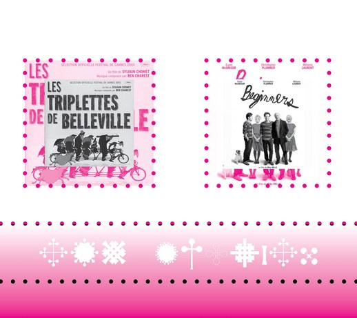
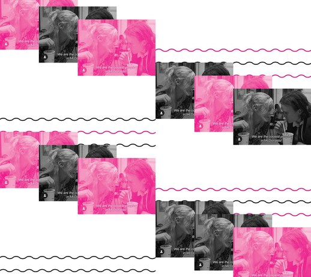
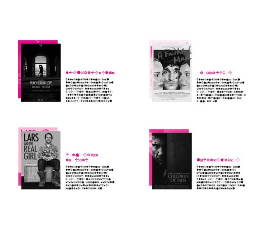
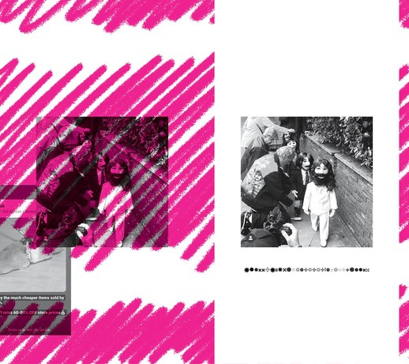
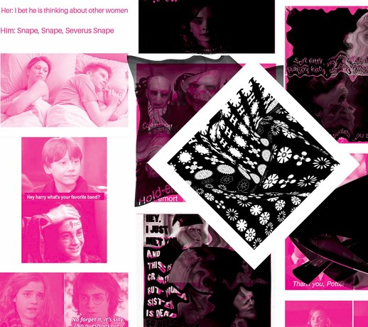
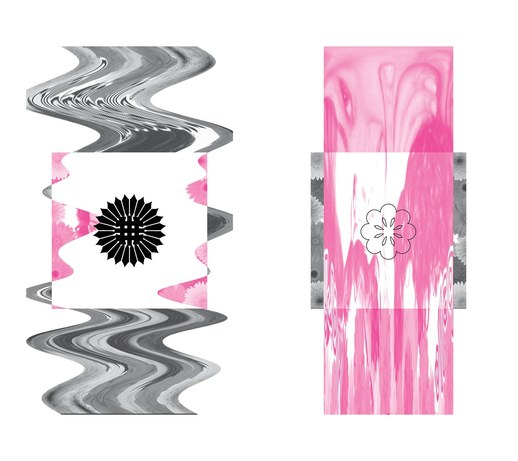
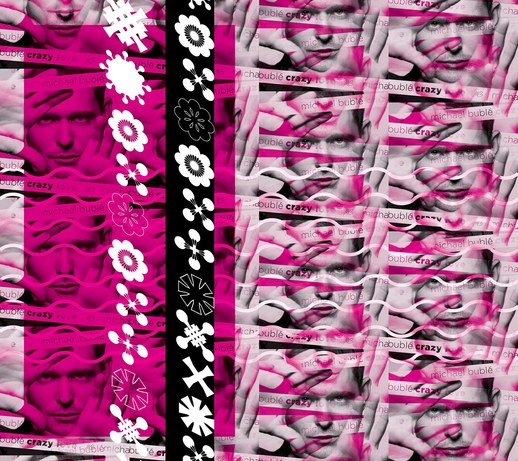
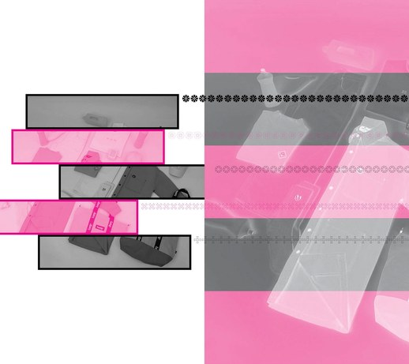